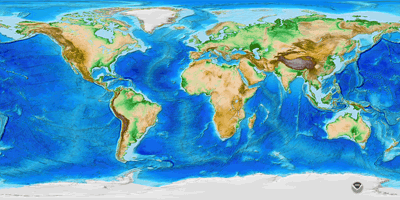
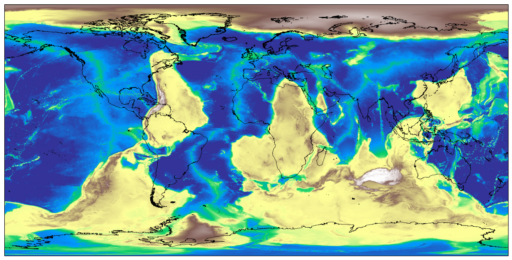

EMSC Week 11 - A detailed look at the depth-age relationship for the seafloor.#
We are going to work with the ETOPO1 dataset (Amante et al) which we can download from various services online when we need it. You can read more about the dataset here: https://ngdc.noaa.gov/mgg/global/

We need some libraries to help with downloading, manipulating and plotting the data:
numpyto manipulate arraysxarraywhich extendsnumpyfor data that might be too big to read all at oncematplotlibandcartopyfor plotting data on maps
Navigation#
References#
Amante, C. “ETOPO1 1 Arc-Minute Global Relief Model: Procedures, Data Sources and Analysis.” National Geophysical Data Center, NOAA, 2009. https://doi.org/10.7289/V5C8276M.
Read ETOPO data from a remote service#
This is how we access the data - provide a url, open that url, and ask for a subset of the data (either by region or by taking every n’th value)
etopo_dataset = "http://thredds.socib.es/thredds/dodsC/ancillary_data/bathymetry/ETOPO1_Bed_g_gmt4.nc"
etopo_data = xarray.open_dataset(etopo_dataset)
subs_data = etopo_data.sel(x=slice(left,right, 30), y=slice(bottom, top, 30))
Here we have requested every 30th data point.
(left, bottom, right, top) = (-180, -90, 180, 90)
map_extent = ( left, right, bottom, top)
etopo_dataset = "dap2://thredds.socib.es/thredds/dodsC/ancillary_data/bathymetry/etopo2.nc"
etopo_data = xarray.open_dataset(etopo_dataset, engine="pydap")
# Take every 180th point of the 1 arc minute dataset (in each axis)
subs_data = etopo_data.sel(lon=slice(left,right, 5), lat=slice(bottom, top, 5))
lons = subs_data.coords.get('lon')
lats = subs_data.coords.get('lat')
vals = subs_data['topo']
x,y = np.meshgrid(lons.data, lats.data)
height = vals.data
data_http = "dap4://thredds.socib.es/thredds/dodsC/ancillary_data/bathymetry/MED_GEBCO_1min.nc"
gebco_data = xarray.open_dataset(etopo_dataset, engine="pydap")
gebco_data.info()
xarray.Dataset {
dimensions:
lon = 10800 ;
lat = 5400 ;
variables:
float32 lon(lon) ;
float32 lat(lat) ;
float32 topo(lat, lon) ;
// global attributes:
}
from urllib.request import urlretrieve
urlretrieve("http://thredds.socib.es/thredds/dodsC/ancillary_data/bathymetry/MED_GEBCO_1min.nc.dds", "GEBCO_1min.nc.dds")
('GEBCO_1min.nc.dds', <http.client.HTTPMessage at 0x39b952fd0>)
import IPython
display(IPython.display.HTML("GEBCO_1min.nc.dds"))
urlretrieve("http://thredds.socib.es/thredds/dodsC/ancillary_data/bathymetry/MED_GEBCO_1min.nc?elevation[0:10:1080][0:10:3300]", "GEBCO_1min.nc")
---------------------------------------------------------------------------
HTTPError Traceback (most recent call last)
Cell In[101], line 1
----> 1 urlretrieve("http://thredds.socib.es/thredds/dodsC/ancillary_data/bathymetry/MED_GEBCO_1min.nc?elevation[0:10:1080][0:10:3300]", "GEBCO_1min.nc")
File ~/miniforge3/envs/emsc2022/lib/python3.13/urllib/request.py:214, in urlretrieve(url, filename, reporthook, data)
197 """
198 Retrieve a URL into a temporary location on disk.
199
(...) 210 data file as well as the resulting HTTPMessage object.
211 """
212 url_type, path = _splittype(url)
--> 214 with contextlib.closing(urlopen(url, data)) as fp:
215 headers = fp.info()
217 # Just return the local path and the "headers" for file://
218 # URLs. No sense in performing a copy unless requested.
File ~/miniforge3/envs/emsc2022/lib/python3.13/urllib/request.py:189, in urlopen(url, data, timeout, context)
187 else:
188 opener = _opener
--> 189 return opener.open(url, data, timeout)
File ~/miniforge3/envs/emsc2022/lib/python3.13/urllib/request.py:495, in OpenerDirector.open(self, fullurl, data, timeout)
493 for processor in self.process_response.get(protocol, []):
494 meth = getattr(processor, meth_name)
--> 495 response = meth(req, response)
497 return response
File ~/miniforge3/envs/emsc2022/lib/python3.13/urllib/request.py:604, in HTTPErrorProcessor.http_response(self, request, response)
601 # According to RFC 2616, "2xx" code indicates that the client's
602 # request was successfully received, understood, and accepted.
603 if not (200 <= code < 300):
--> 604 response = self.parent.error(
605 'http', request, response, code, msg, hdrs)
607 return response
File ~/miniforge3/envs/emsc2022/lib/python3.13/urllib/request.py:527, in OpenerDirector.error(self, proto, *args)
525 http_err = 0
526 args = (dict, proto, meth_name) + args
--> 527 result = self._call_chain(*args)
528 if result:
529 return result
File ~/miniforge3/envs/emsc2022/lib/python3.13/urllib/request.py:466, in OpenerDirector._call_chain(self, chain, kind, meth_name, *args)
464 for handler in handlers:
465 func = getattr(handler, meth_name)
--> 466 result = func(*args)
467 if result is not None:
468 return result
File ~/miniforge3/envs/emsc2022/lib/python3.13/urllib/request.py:720, in HTTPRedirectHandler.http_error_302(self, req, fp, code, msg, headers)
717 fp.read()
718 fp.close()
--> 720 return self.parent.open(new, timeout=req.timeout)
File ~/miniforge3/envs/emsc2022/lib/python3.13/urllib/request.py:495, in OpenerDirector.open(self, fullurl, data, timeout)
493 for processor in self.process_response.get(protocol, []):
494 meth = getattr(processor, meth_name)
--> 495 response = meth(req, response)
497 return response
File ~/miniforge3/envs/emsc2022/lib/python3.13/urllib/request.py:604, in HTTPErrorProcessor.http_response(self, request, response)
601 # According to RFC 2616, "2xx" code indicates that the client's
602 # request was successfully received, understood, and accepted.
603 if not (200 <= code < 300):
--> 604 response = self.parent.error(
605 'http', request, response, code, msg, hdrs)
607 return response
File ~/miniforge3/envs/emsc2022/lib/python3.13/urllib/request.py:527, in OpenerDirector.error(self, proto, *args)
525 http_err = 0
526 args = (dict, proto, meth_name) + args
--> 527 result = self._call_chain(*args)
528 if result:
529 return result
File ~/miniforge3/envs/emsc2022/lib/python3.13/urllib/request.py:466, in OpenerDirector._call_chain(self, chain, kind, meth_name, *args)
464 for handler in handlers:
465 func = getattr(handler, meth_name)
--> 466 result = func(*args)
467 if result is not None:
468 return result
File ~/miniforge3/envs/emsc2022/lib/python3.13/urllib/request.py:720, in HTTPRedirectHandler.http_error_302(self, req, fp, code, msg, headers)
717 fp.read()
718 fp.close()
--> 720 return self.parent.open(new, timeout=req.timeout)
File ~/miniforge3/envs/emsc2022/lib/python3.13/urllib/request.py:495, in OpenerDirector.open(self, fullurl, data, timeout)
493 for processor in self.process_response.get(protocol, []):
494 meth = getattr(processor, meth_name)
--> 495 response = meth(req, response)
497 return response
File ~/miniforge3/envs/emsc2022/lib/python3.13/urllib/request.py:604, in HTTPErrorProcessor.http_response(self, request, response)
601 # According to RFC 2616, "2xx" code indicates that the client's
602 # request was successfully received, understood, and accepted.
603 if not (200 <= code < 300):
--> 604 response = self.parent.error(
605 'http', request, response, code, msg, hdrs)
607 return response
File ~/miniforge3/envs/emsc2022/lib/python3.13/urllib/request.py:527, in OpenerDirector.error(self, proto, *args)
525 http_err = 0
526 args = (dict, proto, meth_name) + args
--> 527 result = self._call_chain(*args)
528 if result:
529 return result
File ~/miniforge3/envs/emsc2022/lib/python3.13/urllib/request.py:466, in OpenerDirector._call_chain(self, chain, kind, meth_name, *args)
464 for handler in handlers:
465 func = getattr(handler, meth_name)
--> 466 result = func(*args)
467 if result is not None:
468 return result
File ~/miniforge3/envs/emsc2022/lib/python3.13/urllib/request.py:720, in HTTPRedirectHandler.http_error_302(self, req, fp, code, msg, headers)
717 fp.read()
718 fp.close()
--> 720 return self.parent.open(new, timeout=req.timeout)
File ~/miniforge3/envs/emsc2022/lib/python3.13/urllib/request.py:495, in OpenerDirector.open(self, fullurl, data, timeout)
493 for processor in self.process_response.get(protocol, []):
494 meth = getattr(processor, meth_name)
--> 495 response = meth(req, response)
497 return response
File ~/miniforge3/envs/emsc2022/lib/python3.13/urllib/request.py:604, in HTTPErrorProcessor.http_response(self, request, response)
601 # According to RFC 2616, "2xx" code indicates that the client's
602 # request was successfully received, understood, and accepted.
603 if not (200 <= code < 300):
--> 604 response = self.parent.error(
605 'http', request, response, code, msg, hdrs)
607 return response
File ~/miniforge3/envs/emsc2022/lib/python3.13/urllib/request.py:533, in OpenerDirector.error(self, proto, *args)
531 if http_err:
532 args = (dict, 'default', 'http_error_default') + orig_args
--> 533 return self._call_chain(*args)
File ~/miniforge3/envs/emsc2022/lib/python3.13/urllib/request.py:466, in OpenerDirector._call_chain(self, chain, kind, meth_name, *args)
464 for handler in handlers:
465 func = getattr(handler, meth_name)
--> 466 result = func(*args)
467 if result is not None:
468 return result
File ~/miniforge3/envs/emsc2022/lib/python3.13/urllib/request.py:613, in HTTPDefaultErrorHandler.http_error_default(self, req, fp, code, msg, hdrs)
612 def http_error_default(self, req, fp, code, msg, hdrs):
--> 613 raise HTTPError(req.full_url, code, msg, hdrs, fp)
HTTPError: HTTP Error 400:
xarray.open_dataset("GEBCO_1min.nc")
<xarray.Dataset> Size: 29MB
Dimensions: (lat: 1081, lon: 3301)
Coordinates:
* lat (lat) float64 9kB 30.0 30.02 30.03 30.05 ... 47.97 47.98 48.0
* lon (lon) float64 26kB -10.0 -9.983 -9.967 -9.95 ... 44.97 44.98 45.0
Data variables:
elevation (lat, lon) float64 29MB ...
Attributes:
Conventions: CF-1.0
title: The GEBCO One Minute Grid - a continuous terrain model for ...
institution: On behalf of the General Bathymetric Chart of the Oceans (G...
source: The grid is largely based on the bathymetric contours conta...
history: This is version 2.0 of the data set, released in November 2008
references: Information on the data set is available from the internet:...
comment: The data in the GEBCO One Minute Grid should not be used fo...
node_offset: 0
History: Translated to CF-1.0 Conventions by Netcdf-Java CDM (Netcdf...ls -l
total 38720
-rw-r--r--@ 1 lmoresi staff 3960 Apr 2 17:19 EMSC2022W11.i.ipynb
-rw-r--r--@ 1 lmoresi staff 1615653 Apr 3 12:15 EMSC2022W11.ii.ipynb
-rw-r--r-- 1 lmoresi staff 5869 May 11 2024 EMSC2022W11.iii.ipynb
-rw-r--r--@ 1 lmoresi staff 9303 Mar 17 17:08 EMSC2022W11.iv.ipynb
-rw-r--r-- 1 lmoresi staff 8083 May 13 2024 EMSC2022W11.v.ipynb
-rw-r--r-- 1 lmoresi staff 9110 May 13 2024 EMSC2022W11.vi.ipynb
-rw-r--r--@ 1 lmoresi staff 7173860 Apr 3 12:16 GEBCO_1min.nc
-rw-r--r--@ 1 lmoresi staff 281 Apr 3 11:54 GEBCO_1min.nc.dds
-rw-r--r--@ 1 lmoresi staff 4638 Apr 3 11:43 GEBCO_1min.nc.info
drwxr-xr-x 8 lmoresi staff 256 Mar 21 2023 Images/
-rw-r--r--@ 1 lmoresi staff 9351514 Apr 2 21:26 TEST.nc
-rw-r--r-- 1 lmoresi staff 1386663 May 11 2024 TheTargetPlot.png
drwxr-xr-x 4 lmoresi staff 128 Mar 21 2023 data/
import pydap
from pydap.client import open_url
url= "https://thredds.socib.es/thredds/dodsC/ancillary_data/bathymetry/MED_GEBCO_1min.nc?elevation[0:10:1080][0:10:3300]"
dataset = dataset=open_url(url, protocol="dap2")
dataset["elevation"].tree()
.elevation
├──elevation
├──lat
└──lon
lat_a = dataset['elevation']['lat'].data
lat_a.shape
(109,)
cat GEBCO_1min.nc.info
<html><head><script async src="https://www.googletagmanager.com/gtag/js?id=G-2DVXD3M3LB"></script><script>window.dataLayer = window.dataLayer || [];function gtag(){dataLayer.push(arguments);}gtag("js", new Date());gtag("config", "G-2DVXD3M3LB");</script><title>Dataset Information</title>
<style type="text/css">
<!-- ul {list-style-type: none;} -->
</style>
</head>
<body>
<h3>Dataset Information</h3>
<table>
<tr><td align=right valign=top><b>Conventions</b>:</td>
<td align=left>CF-1.0<br></td></tr>
<tr><td align=right valign=top><b>title</b>:</td>
<td align=left>The GEBCO One Minute Grid - a continuous terrain model for oceans and land at one arc-minute intervals<br></td></tr>
<tr><td align=right valign=top><b>institution</b>:</td>
<td align=left>On behalf of the General Bathymetric Chart of the Oceans (GEBCO) the data are held at the British Oceanographic Data Centre (BODC).<br></td></tr>
<tr><td align=right valign=top><b>source</b>:</td>
<td align=left>The grid is largely based on the bathymetric contours contained in the GEBCO Digital Atlas (GDA) with existing gridded data sets used in some areas. Land elevations are derived from the Global Land One-km Base Elevation (GLOBE) database. Further information can be found in the documentation that accompanies the data set. http://www.gebco.net/data_and_products/gridded_bathymetry_data/<br></td></tr>
<tr><td align=right valign=top><b>history</b>:</td>
<td align=left>This is version 2.0 of the data set, released in November 2008<br></td></tr>
<tr><td align=right valign=top><b>references</b>:</td>
<td align=left>Information on the data set is available from the internet: http://www.gebco.net/data_and_products/gridded_bathymetry_data/<br></td></tr>
<tr><td align=right valign=top><b>comment</b>:</td>
<td align=left>The data in the GEBCO One Minute Grid should not be used for navigation or any purpose relating to safety at sea.<br></td></tr>
<tr><td align=right valign=top><b>node_offset</b>:</td>
<td align=left>0<br></td></tr>
<tr><td align=right valign=top><b>History</b>:</td>
<td align=left>Translated to CF-1.0 Conventions by Netcdf-Java CDM (NetcdfCFWriter)
Original Dataset = /local/webassdata/grid/gebco/GRIDONE_2D_301381.nc; Translation Date = Thu Mar 26 09:04:40 GMT 2015<br></td></tr>
</table>
<p>
<hr>
<h3>Variables in this Dataset</h3>
<table>
<tr><td align=right valign=top><b>elevation</b>:</td>
<td align=left valign=top>Grid
<ul>
<li> <b> long_name: </b> Elevation relative to sea level </li>
<li> <b> units: </b> m </li>
<li> <b> scale_factor: </b> 1.0 </li>
<li> <b> add_offset: </b> 0.0 </li>
<li> <b> actual_range: </b> -10577.0, 8430.0 </li>
<li> <b> coordinates: </b> lat lon </li>
</ul>
<table>
<tr>
<td align=right valign=top><b>elevation</b>:</td>
<td align=left valign=top>Array of 16 bit Integers [lat = 0..1080][lon = 0..3300]
<ul>
<li> <b> long_name: </b> Elevation relative to sea level </li>
<li> <b> units: </b> m </li>
<li> <b> scale_factor: </b> 1.0 </li>
<li> <b> add_offset: </b> 0.0 </li>
<li> <b> actual_range: </b> -10577.0, 8430.0 </li>
<li> <b> coordinates: </b> lat lon </li>
</ul>
</td>
</tr>
<tr>
<td align=right valign=top><b>lat</b>:</td>
<td align=left valign=top>Array of 64 bit Reals [lat = 0..1080]
<ul>
<li> <b> standard_name: </b> latitude </li>
<li> <b> long_name: </b> latitude </li>
<li> <b> units: </b> degrees_north </li>
<li> <b> axis: </b> Y </li>
<li> <b> _CoordinateAxisType: </b> Lat </li>
</ul>
</td>
</tr>
<tr>
<td align=right valign=top><b>lon</b>:</td>
<td align=left valign=top>Array of 64 bit Reals [lon = 0..3300]
<ul>
<li> <b> standard_name: </b> longitude </li>
<li> <b> long_name: </b> longitude </li>
<li> <b> units: </b> degrees_east </li>
<li> <b> axis: </b> X </li>
<li> <b> _CoordinateAxisType: </b> Lon </li>
</ul>
</td>
</tr>
</table>
</td>
</tr><tr><td align=right valign=top><b>lat</b>:</td>
<td align=left valign=top>Array of 64 bit Reals [lat = 0..1080]
<ul>
<li> <b> standard_name: </b> latitude </li>
<li> <b> long_name: </b> latitude </li>
<li> <b> units: </b> degrees_north </li>
<li> <b> axis: </b> Y </li>
<li> <b> _CoordinateAxisType: </b> Lat </li>
</ul>
</td>
</tr><tr><td align=right valign=top><b>lon</b>:</td>
<td align=left valign=top>Array of 64 bit Reals [lon = 0..3300]
<ul>
<li> <b> standard_name: </b> longitude </li>
<li> <b> long_name: </b> longitude </li>
<li> <b> units: </b> degrees_east </li>
<li> <b> axis: </b> X </li>
<li> <b> _CoordinateAxisType: </b> Lon </li>
</ul>
</td>
</tr></table>
<p>
<hr>
<h2>No Dataset Specific Information Available.</h2><hr><hr>
<h2>No Server Specific Information Available.</h2><hr>
</body></html>
Validation#
Can you check to see what resolution data we have downloaded ?
(hint the height data is a numpy array and has a shape attribute)
Check here:
print("The shape of the array is ... ")
The shape of the array is ...
and we should plot the data to see if it matches the image above and whether we need more resolution. Does that look right ?
If the map is horribly pixelated, we might try downloading more data. Don’t go mad or it will take forever.
import cartopy.crs as ccrs
import cartopy.feature as cfeature
coastline = cfeature.NaturalEarthFeature('physical', 'coastline', '10m',
edgecolor=(1.0,0.8,0.0),
facecolor="none")
plt.figure(figsize=(15, 10))
ax = plt.subplot(111, projection=ccrs.PlateCarree())
ax.set_extent(map_extent)
ax.add_feature(coastline, edgecolor="black", linewidth=0.5, zorder=3)
plt.imshow(height, extent=map_extent, transform=ccrs.PlateCarree(),
cmap='terrain', vmin=-5000., vmax=5000.)
<matplotlib.image.AxesImage at 0x3538c6e90>

The map does not look quite right, does it ?
It is important to check the data that you download to make sure that:
you downloaded the correct data
the resolution is enough for the job at hand
the dataset is complete / not corrupted
In the map, the data is obviously not exactly as we would expect. It’s obviously not corrupted but it is not correctly formatted for the imshow command. You can fix this in one of two ways: either adjust the ordering of the dataset to match what imshow wants or ask imshow to do it for you by adding the origin="lower" argument.
## Fixed code here
Exercise#
Download the data at high(er) resolution and make a nicer map (say skip every 30 instead of 300) that’s \(10 \times 10\) more data points so it might take a bit longer to download / plot.
Note: the purpose of this exercise is to show you some very basic ways to check the data by downloading a small sample before launching into an expensive analysis.
# This is how you save it if you want to keep it
# fig.savefig("ETOPO1.png", dpi=150)